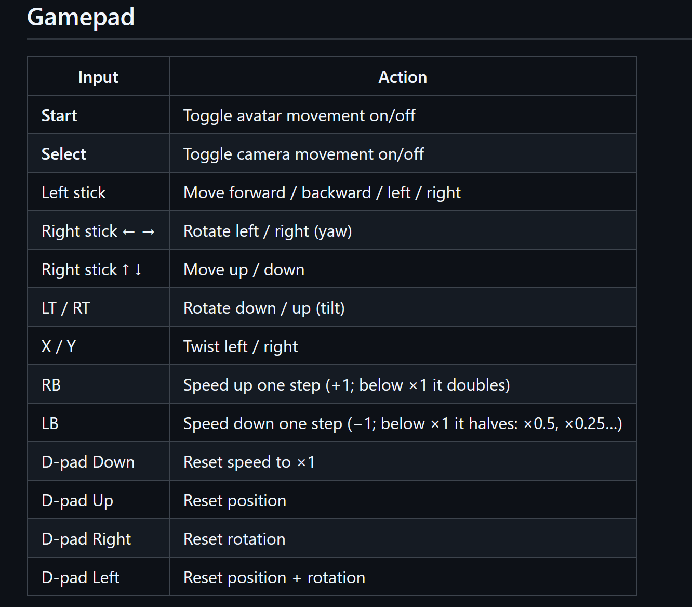

Off the record · Unlisted
Secret Releases.
I'm not trying to rock the boat with anyone but I have been using AI coding tools to make a couple of tiny apps that are useful for me. I figure they might also be useful to others. So here they are. Please do with them what you will.
Please be warned that these are unsigned and your OS will probably warn you when you try to install them.
Twitch Tinder
v1.4.0Twitch discovery is not great. This app will take your following list and give you a tinder style feed of streamers that you can like (and hopefully follow) or not like, and it won't show you again.
VRC2VNyan
v0.2.0I wanted to get more vnyan worlds. It turns out that there are a lot of unity packages out there for vrchat but also in places like the unity asset store OR humble bundle. This app pulls in the unity package and tries to massage it to being a vnyan world. There are bugs and issues, but I did get decent stuff out of it.
VRMBones
v0.3.0I've worked with Chrispy_Taters for models for a while but he had an issue where the ear bones would sometimes just disappear. These earbones are important because I use LZ's ear and tail graphs for vnyan to add "ear and tail tracking". I had an idea: "what if we could have an app that could transfer those over". It morphed into being a lot more. I might add more to this project as I get feedback from my modellers.
- It can copy and paste ear, tail, and butt bones from one vrm to another
- It can create new tail/ear bones on models that don't have them.
- It can add butt bones and physics to models that don't have them.
- It can add bones to skirts for more realistic movement.
- It can add bones to hair for more realistic movement.
VNyanPositionController
v1.4.0I found LZ's drone camera controller and it worked well enough but I wanted to add a position element as well because sometimes the vnyan worlds are BIG. This is a vnyan plugin that does both!

VnyanHandColliders
v0.0.1I had talked to my modeller about potentially having a glove props to add colliders to my hand. It turned out that this wasn't the most optimal way to go about it. So here's a vnyan plugin for adding hand, arm, and leg colliders. It worked pretty decently for me, but it's still new so if you find any bugs let me know.